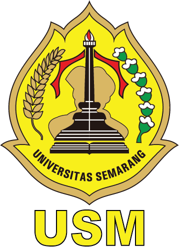

 SELAMAT DATANG DI SITUS FTIK - USM
UNIVERSITAS SEMARANG (USM) didirikan oleh Yayasan Alumni Universitas Diponegoro sejak 1987 atas dasar semangat dan pengabdian dengan menyelenggarakan pendidikan tinggi yang bermutu dan terjangkau sebagaimana yang tertuang dalam motto USM yakni Jembatan Masa Depan Anda untuk mencerdaskan kehidupan bangsa.
Perguruan tinggi ini didirikan dengan bentuk 1 politeknik (Politeknik Semarang) yang memiliki 4 program studi (PS) D-III yaitu Kepaniteraan Hukum, Manajemen Perusahaan, Teknik Sipil Hidro, dan Teknologi Hasil Pertanian. Pada tahun 1994, Politeknik Semarang resmi berubah bentuk menjadi universitas dengan nama Universitas Semarang (USM) yang saat ini memiliki 12 PS yaitu D-III Manajemen Perusahaan, S-1 Ilmu Hukum, S-1 Manajemen, S-1 Akuntansi, S-1 Teknik Sipil, S-1 Teknik Elektro, S-1 Psikologi, S-1 Ilmu dan Teknologi Pangan, S-1 Sistem Informasi, S-1 Teknik Informatika, S-1 Ilmu Komunikasi dan S-2 Magister. Manajemen.